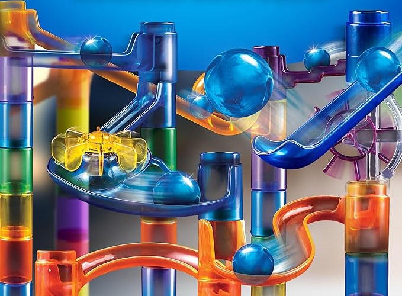
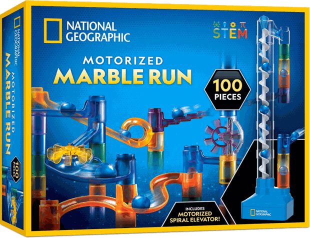

This Christmas
Give their favourite gift, by far.
National Geographic Motorized Marble Run · Ages 8+

“I bought this for my 7-year old son for his birthday and it was his favourite gift by far. It has kept him entertained for hours and really stimulated his creativity and engineering mind. Great quality. Would 100% recommend!”
